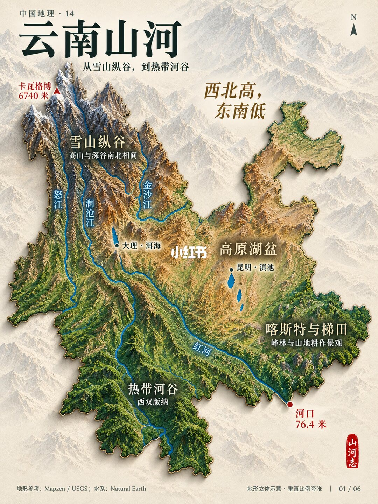
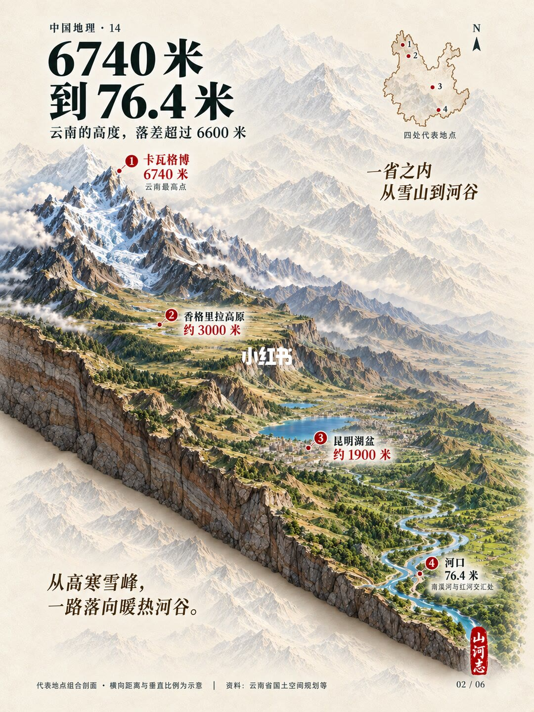
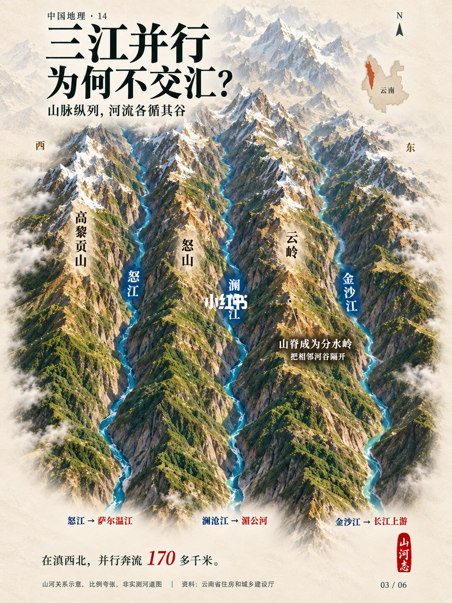
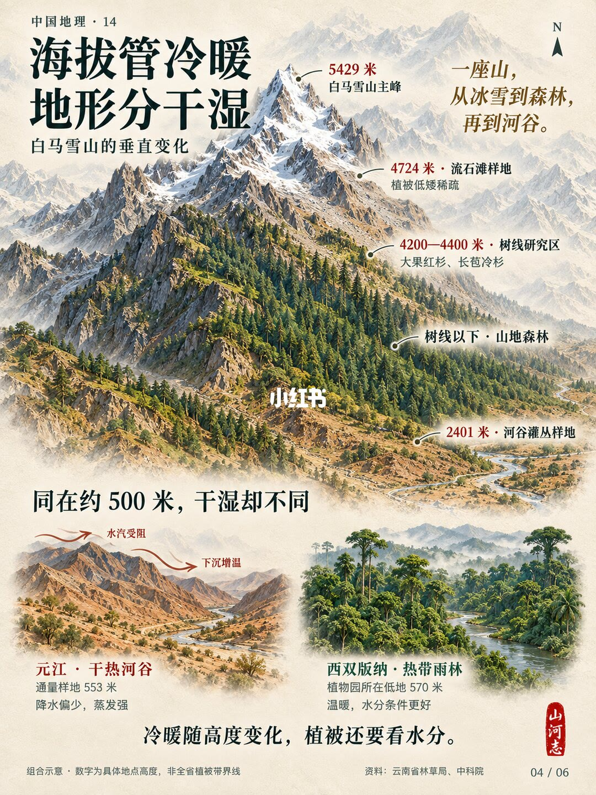
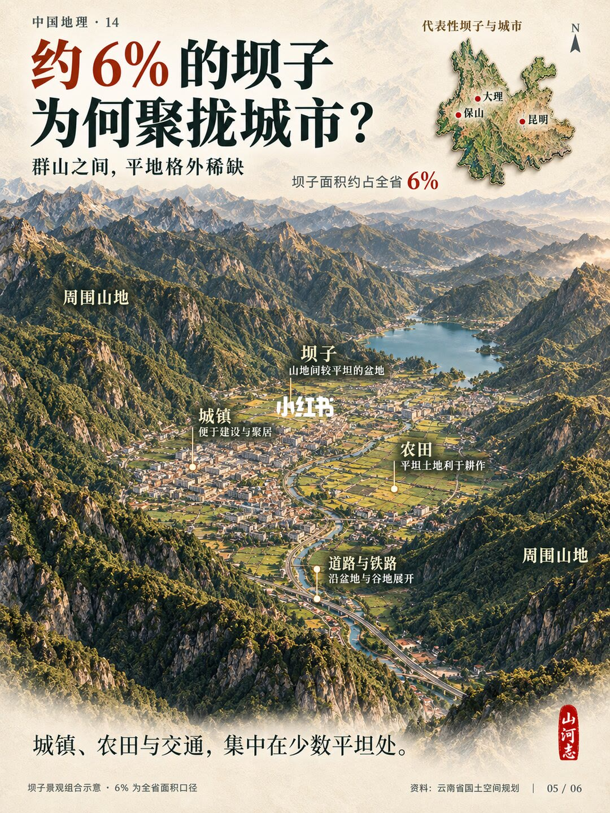
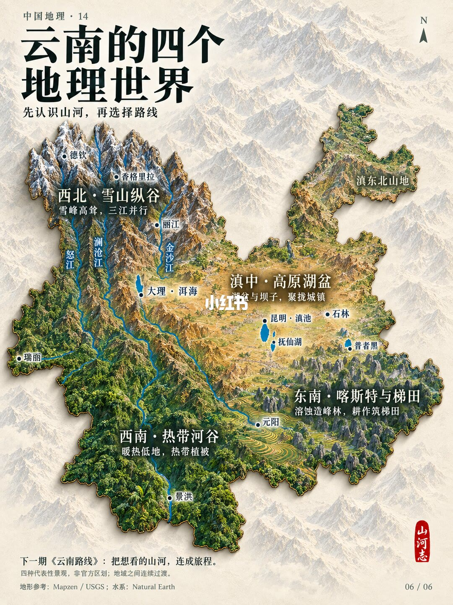

第 1 页：从雪山纵谷到热带河谷

1/6西北高东南低：卡瓦格博 6740 米到河口 76.4 米；雪山纵谷（怒澜金）、高原湖盆（洱海滇池）、喀斯特梯田、热带河谷（西双版纳）。
Yunnan overview: NW high–SE low; gorge, lake basins, karst terraces, tropical valleys.
第 2 页：6740 米到 76.4 米

2/6一省落差逾 6600 米：卡瓦格博→香格里拉高原→昆明湖盆→河口；从高寒雪峰落到暖热河谷。
Elevation profile from Kawagarbo to Hekou—over 6600 m of relief.
第 3 页：三江并流为何不交汇

3/6高黎贡—怒山—云岭纵列，怒江、澜沧江、金沙江各走其谷，山脊作分水岭；滇西北并行百余公里后分入萨尔温、湄公与长江。
Three Parallel Rivers: ridges keep Nu, Lancang, and Jinsha apart.
第 4 页：海拔管冷暖，地形分干湿

4/6白马雪山垂直带：雪峰—流石滩—树线—山地森林—河谷灌丛；同约 500 米，元江干热河谷 vs 西双版纳雨林，水分不同。
Vertical belts on Baima Snow Mountain; same ~500 m can be dry-hot or rainforest.
第 5 页：约 6% 的坝子为何聚拢城市

5/6群山中平地稀缺，坝子约占全省 6%，城镇农田交通挤在保山、大理、昆明等湖盆/坝子。
~6% dam/basin land holds towns, farms, and transport.
第 6 页：云南的四个地理世界

6/6西北雪山纵谷、西南热带河谷、滇中高原湖盆、东南喀斯特与梯田——先认山河再选路线。
Four geographic worlds: gorge, tropical valleys, lake basins, karst terraces.